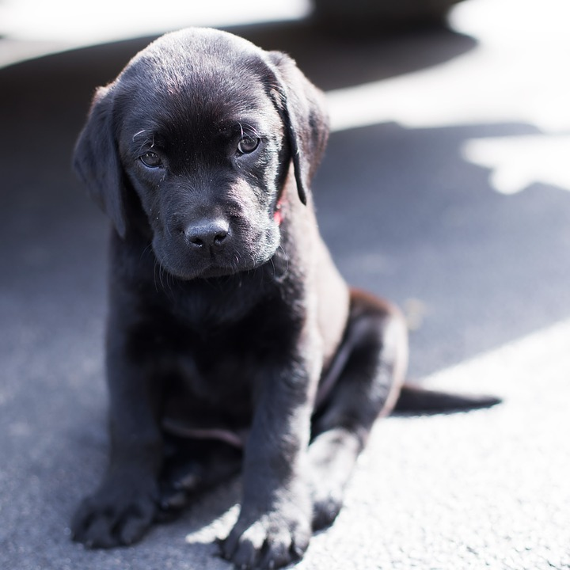
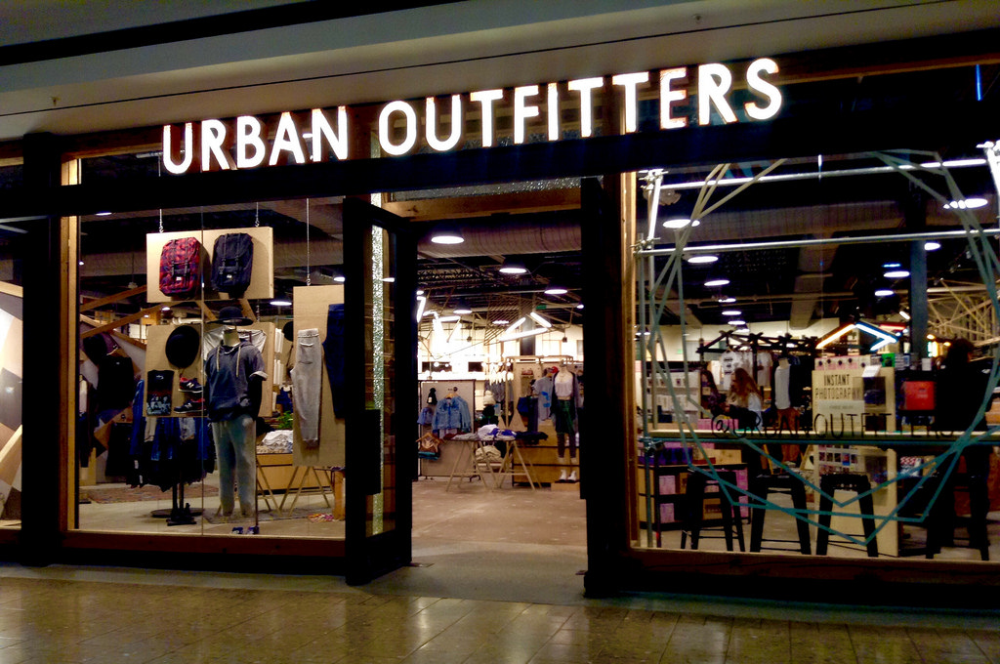

My favorite place to go is Dewey Beach in Delaware. The sound of the waves crashing and the salty sea air make me feel at home.

Black labradors are my favorite breed of dog because they are extremely friendly, and though this puppy is small for now, male english labradors grow to be around 80 pounds.

Urban Outfitters is my favorite clothing store because their clothes are trendy and great quality. This brand was founded in Philadelphia, Pennsylvania.